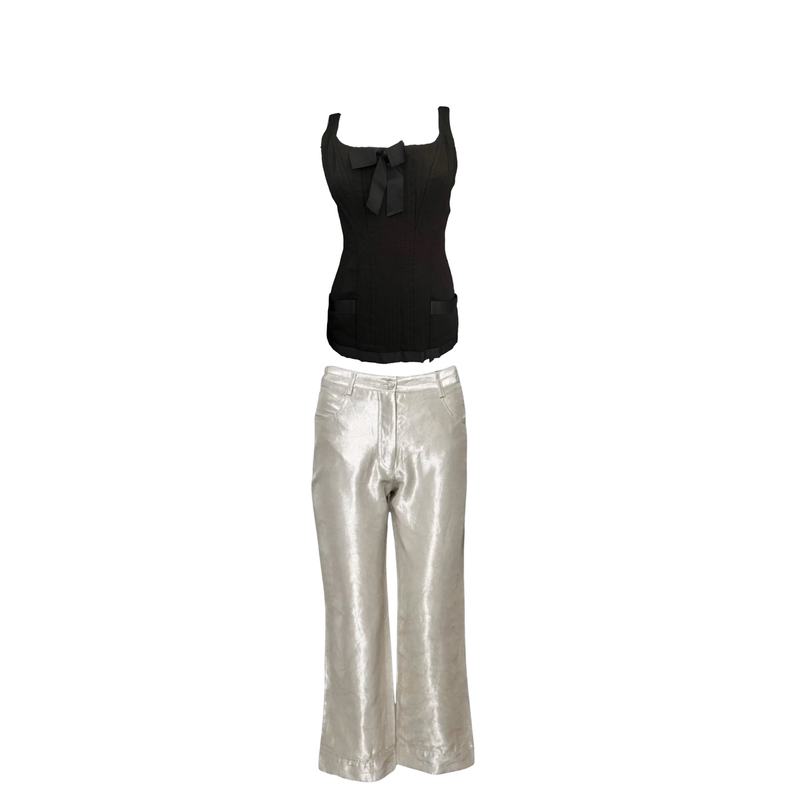

001
Look 001
Dead Channel
The corset holds the signal. The pants broadcast it. Black structure against silver static — discipline dressed for the frequency no one else can hear. The bow is not decorative. It is a warning.
- The Grip — Structured Top, Black
- Static Trousers — Wide-Leg Pants, Silver Metallic